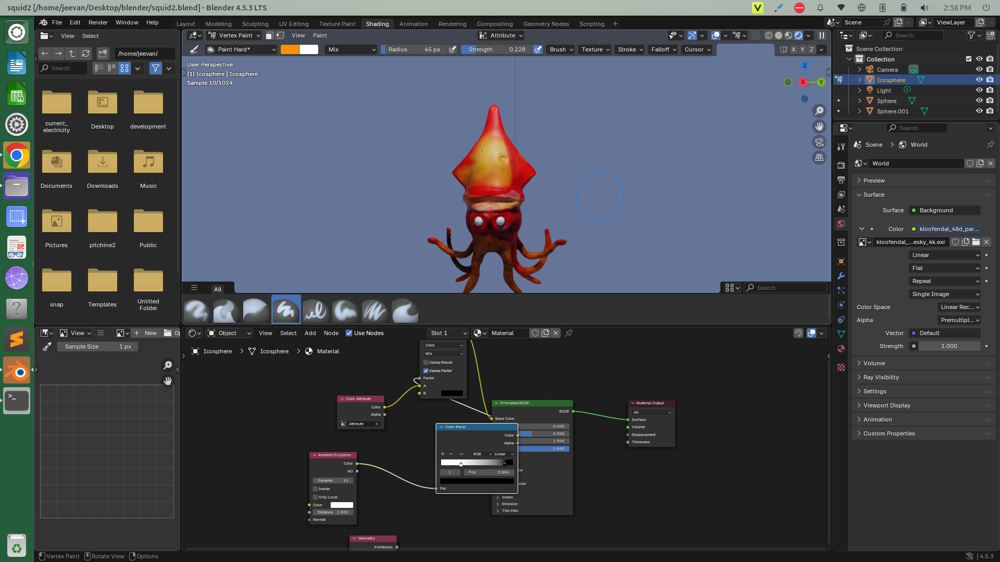

Sculpting a Squid
October 25, 2025Today I finally opened Blender’s sculpting workspace and started experimenting. It felt kind of like digital clay , just pushing, pulling, and shaping until something started to look alive. I didn’t plan anything specific at first, but somehow it turned into a squid 🦑.
It’s not perfect, but I really liked how smooth sculpting feels once you get the hang of brushes like Grab, Clay Strips, and Inflate. The symmetry feature also helped a lot when shaping the tentacles.
Even though it’s rough, seeing something organic take shape from a blob was super satisfying.
